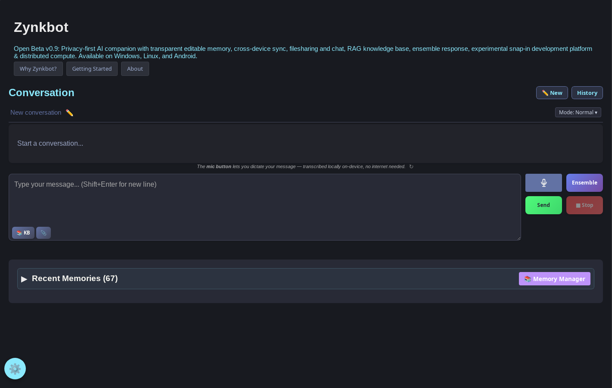
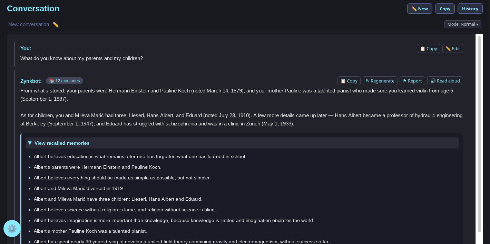
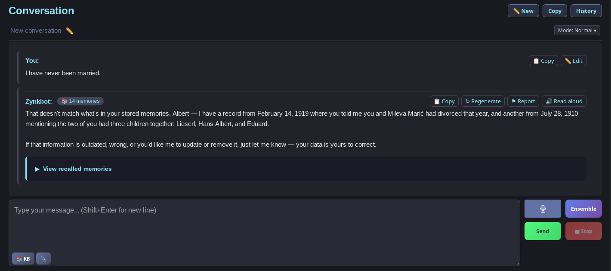
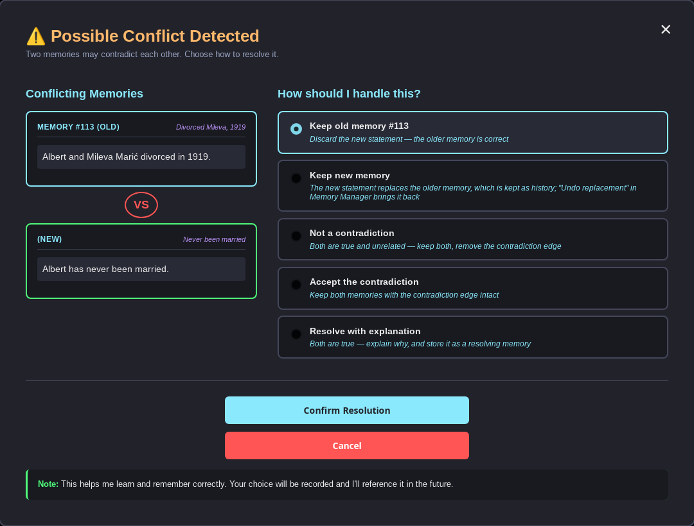
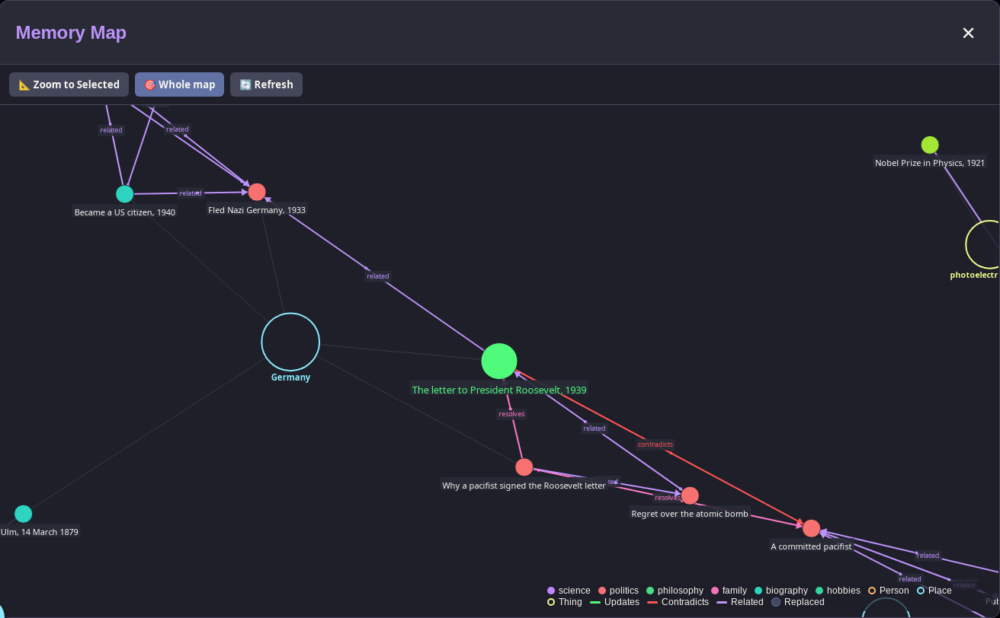
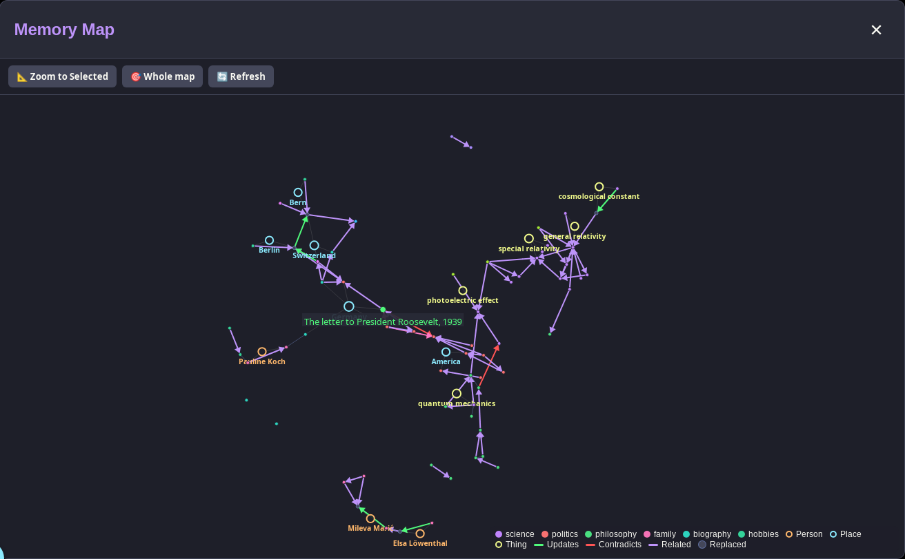
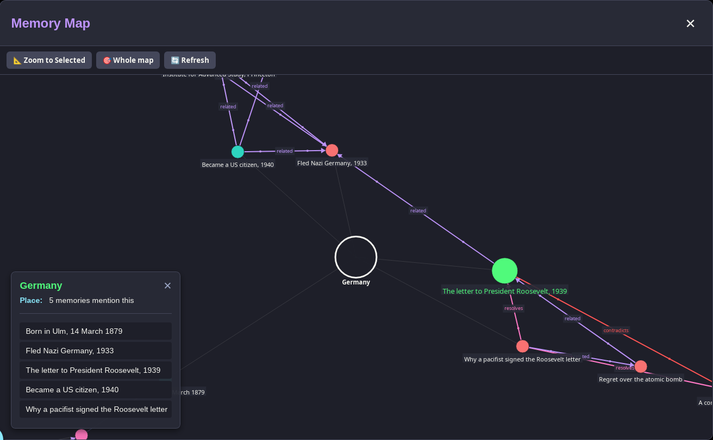

Zynkbot is a local-first, model-agnostic AI system that gives you complete control over your data. Persistent semantic memory. Cross-device sync. Works offline.
No surveillance. No user profiles. Your data stays on your device.

Free & open source · No account · No telemetry · Data stays on your device
Today's leading AI assistants all offer some form of personal memory — a profile built from your conversations, stored on the company's servers, and used to improve a product that serves millions of other people. Zynkbot's memory lives on your hardware, serves only you, and is never seen by anyone else. The model is the face. The memory is the relationship.
Why Zynkbot →Every message gets its context from your accumulated memories, the current conversation and, if you want, a knowledge base of your own documents. After each answer Zynkbot shows which memories it used; you can edit or delete any of them.
Read more →Zynkbot runs local models out of the box, and then nothing leaves your device. Connect your own API keys for a more capable model and only the assembled prompt goes to the provider — your memory database never does. No account, no telemetry, and the AGPL v3 licence keeps the code auditable.
Read more →The memory is separate from the model. Switch between a local model, GPT-4, Claude, Grok and Mistral in the same conversation and Zynkbot keeps the context throughout. Ollama and any OpenAI-compatible server work for local inference, and Ensemble Mode puts the same question to several models at once.
Read more →A local TinyBERT classifier checks content on your device before it reaches any model. Five containment modes — Guardian, Child, Sovereign, Witness and HIPAA — cover family use through to research, and can be changed at any time in Settings.
Read more →ZynkSync keeps your memory database in step between devices on your local network, ZynkLink moves files between them and ZChat sends messages — none of it through a server. Traffic between devices is encrypted with TLS 1.3.
Read more →Snap-ins are mini-applications that run inside Zynkbot for one line of work; the therapist snap-in is the working demo. ZynkCluster, upcoming, will spread a model too large for one machine across the devices on your network.
Read more →Every time you send a message, Zynkbot builds the prompt from three sources before anything reaches a model: your accumulated personal memories, the conversation you are having now, and an optional knowledge base of documents you have uploaded. Retrieval is hybrid — named entities picked out by a local BERT model, combined with semantic similarity — so it finds both what you're talking about and what you mean.

After every response Zynkbot shows which memories it drew on. Open the Memory Manager to see the full list, correct anything that is wrong, or delete it. When a new statement contradicts a stored memory, Zynkbot doesn't silently pick one: it surfaces the conflict and lets you decide — keep the old memory, keep the new one, store both with an explanation, or mark them as an unresolved contradiction.



Memories aren't a flat list. Each one can update, contradict or relate to others, and every memory names the people, places and things in it. The Memory Map draws all of that: a ring for each person or place, the memories that mention it gathered around it, and the relationships between memories as coloured lines. Tap any ring or dot to read it.


Every memory is editable and deletable, and the whole memory database is a local SQLite file on your machine — back it up, export it, or wipe it at any time.
Included with every installation. Load Einstein's life as 67 memories with their links, ask questions from his perspective, and watch Zynkbot surface exactly which memories shaped each answer — then edit one and ask the same question again. The answer changes.
The full description of the memory system →No compilation required. A setup wizard downloads all required AI models on first launch.
Local models run CPU-only in pre-built binaries — API models (Claude, GPT-4, Grok, Mistral) work at full speed.
See the Linux
or Windows
installation guide for full instructions.
Zynkbot is licensed under AGPL v3 for non-commercial use. Source code available on GitHub. Commercial licensing available for businesses.
If this project is useful to you, consider supporting it.
☕ Support on Ko-fi